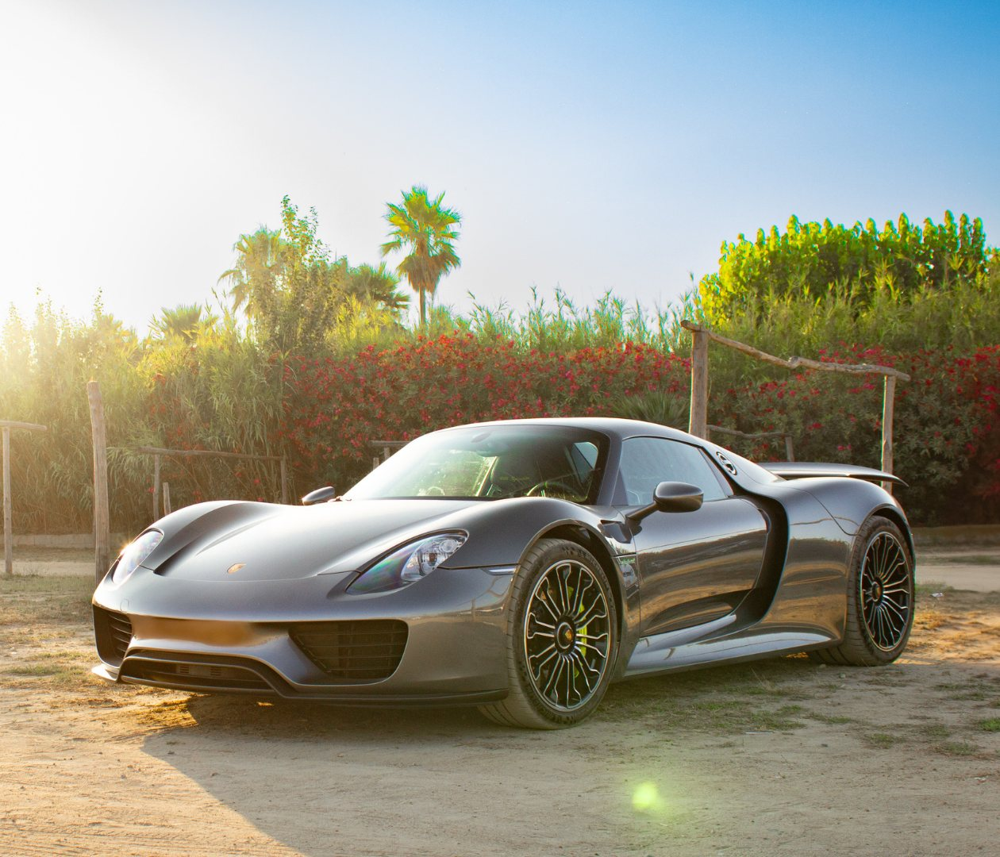
Work
I’ve already worked with dealerships such as Deal&Drive and FactoryAutomobiles.
I also shoot events and private commissions.
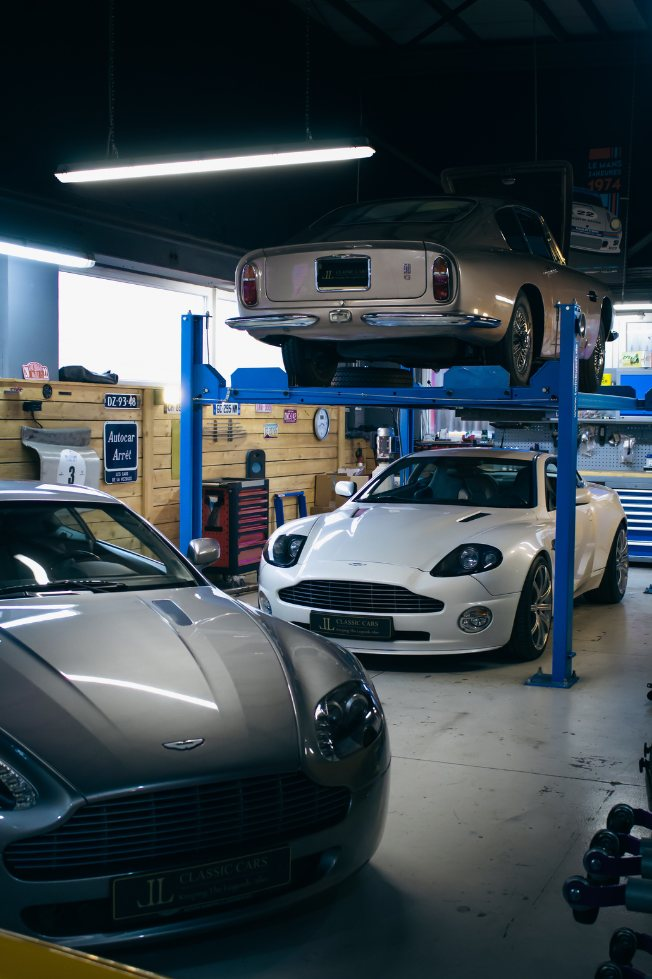
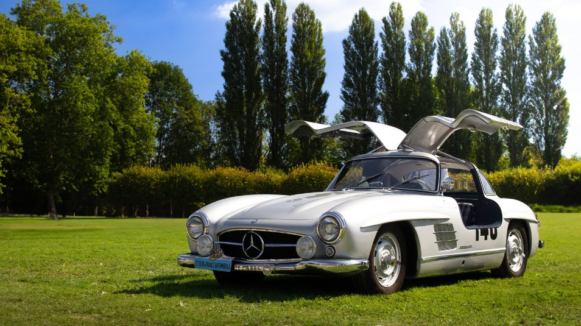
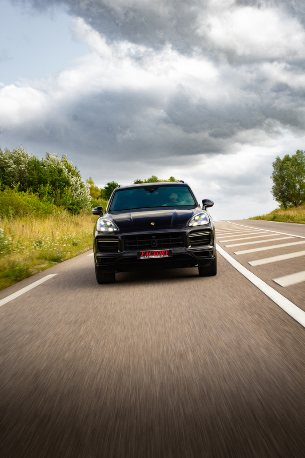
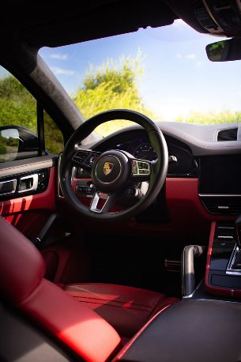
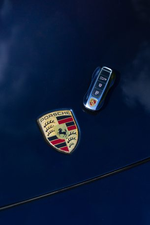
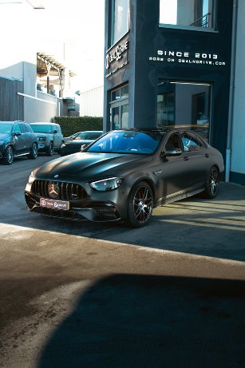
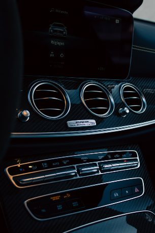
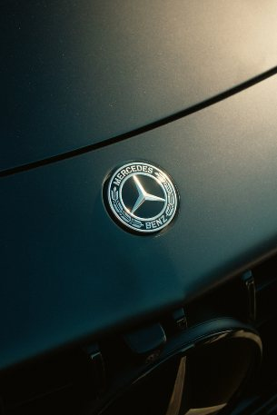
Series
Ferrari 308 GTB
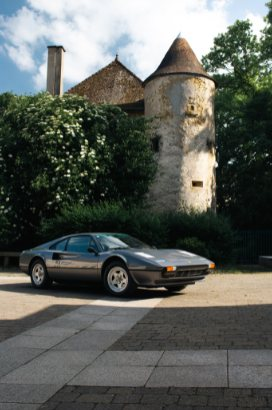
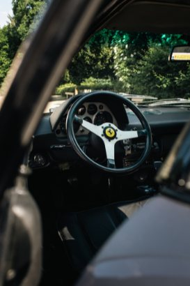
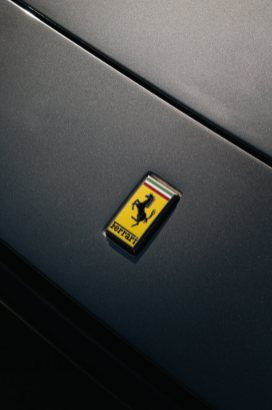
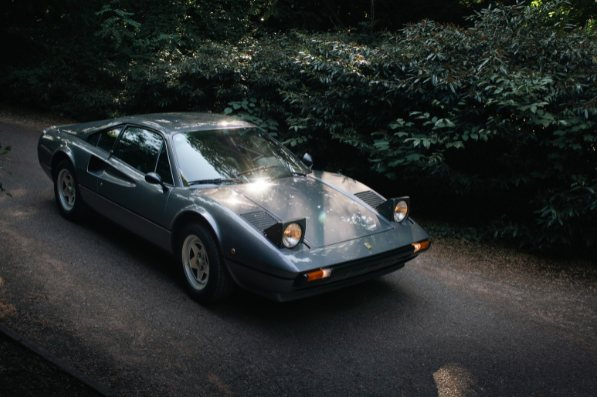
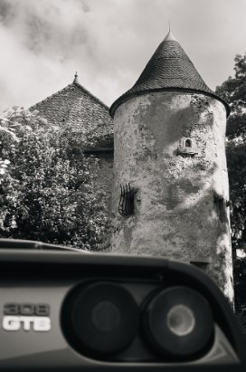
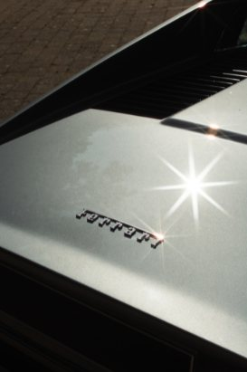
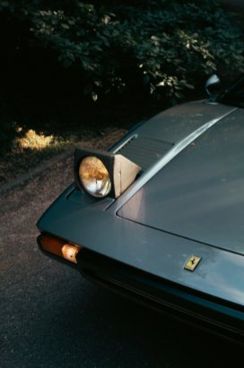
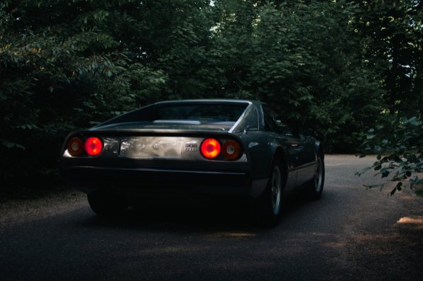
BMW M5 E60
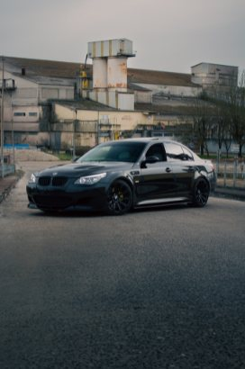
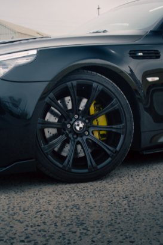
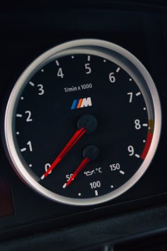
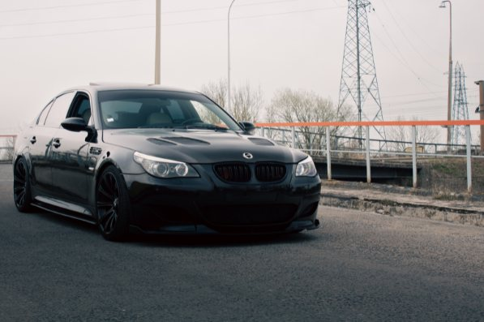
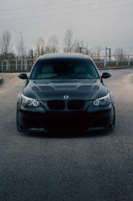
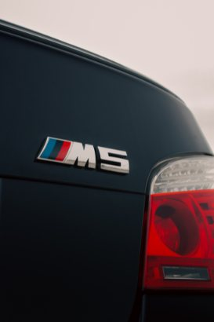
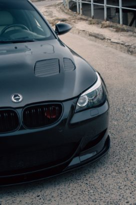
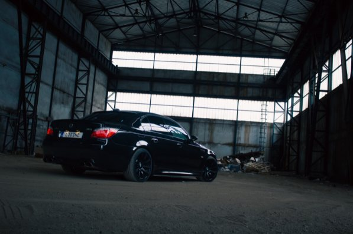
Porsche 911 GT3 RS
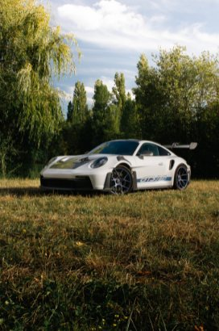
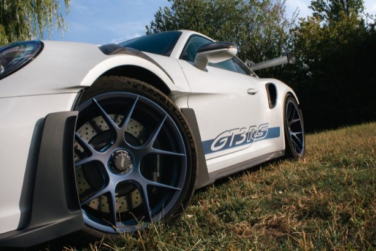
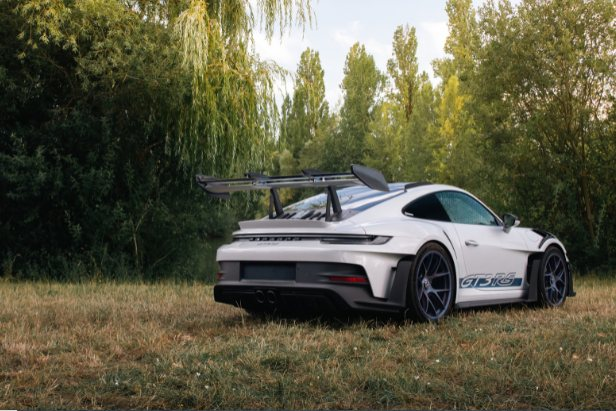
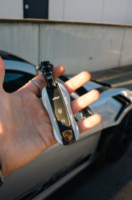
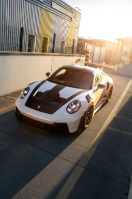
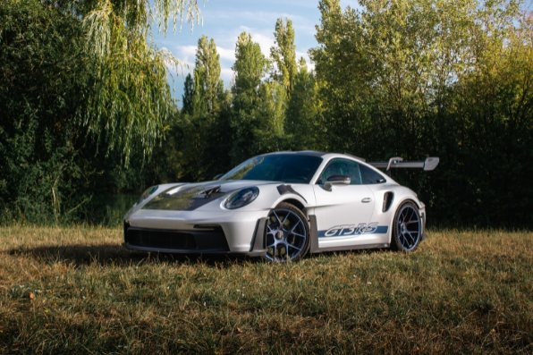
About
I’m an 18-year-old photographer, passionate about cars since I was born. I’ve been fully committed to photography since 2022 and haven’t stopped since.
I shoot with a Sony A7 IV and photograph all types of cars, including classics, supercars and JDM.
I love photography: I’m always meeting extraordinary people, making new friends, and seeing incredible cars that leave me with unforgettable memories.
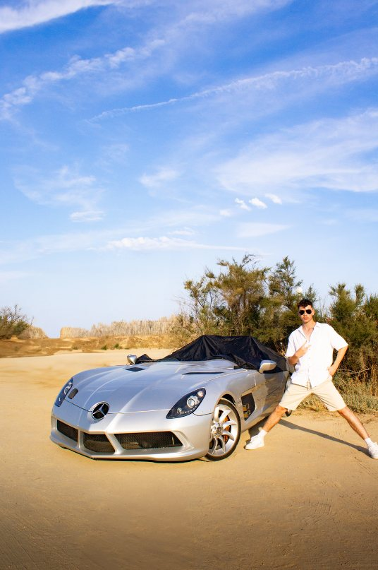
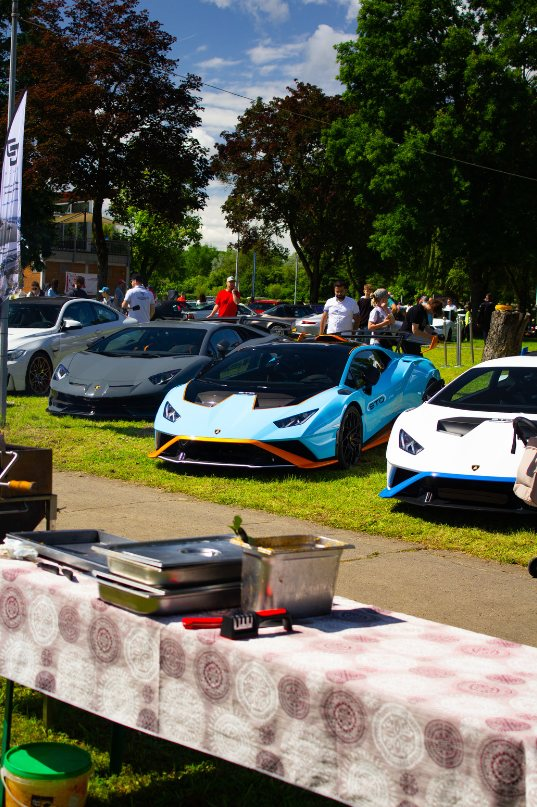
Contact me
If you have any questions or a special request, get in touch through the links below. I hope you enjoyed my pictures and that we’ll work together!
Instagram@fromthe_eyesof_mael
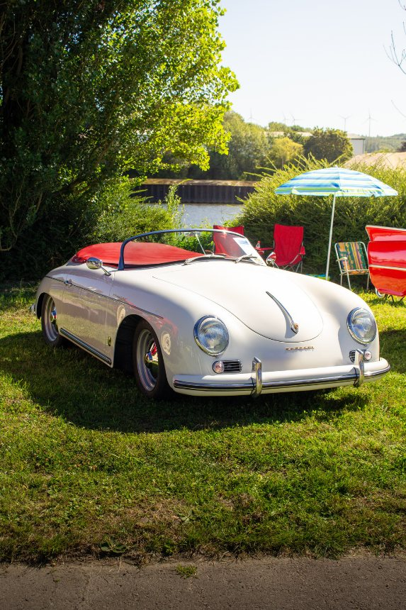
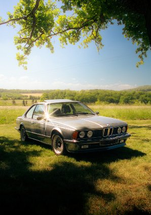
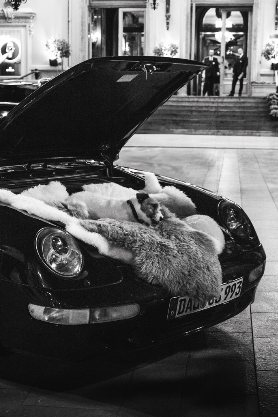
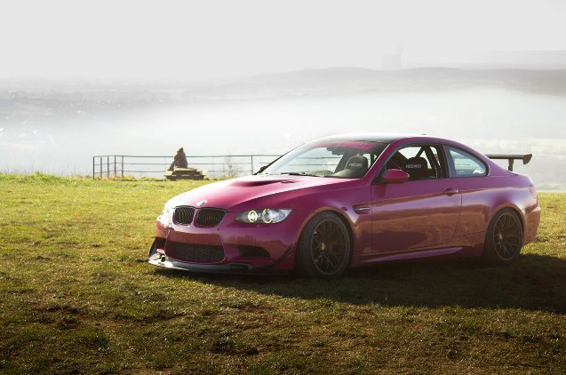